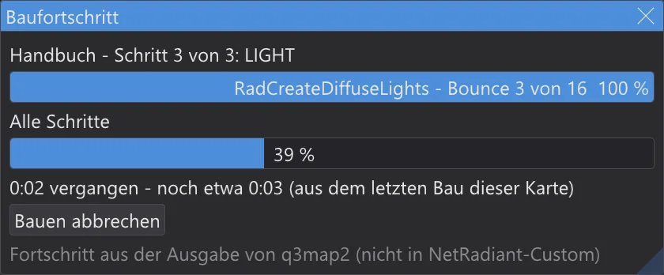
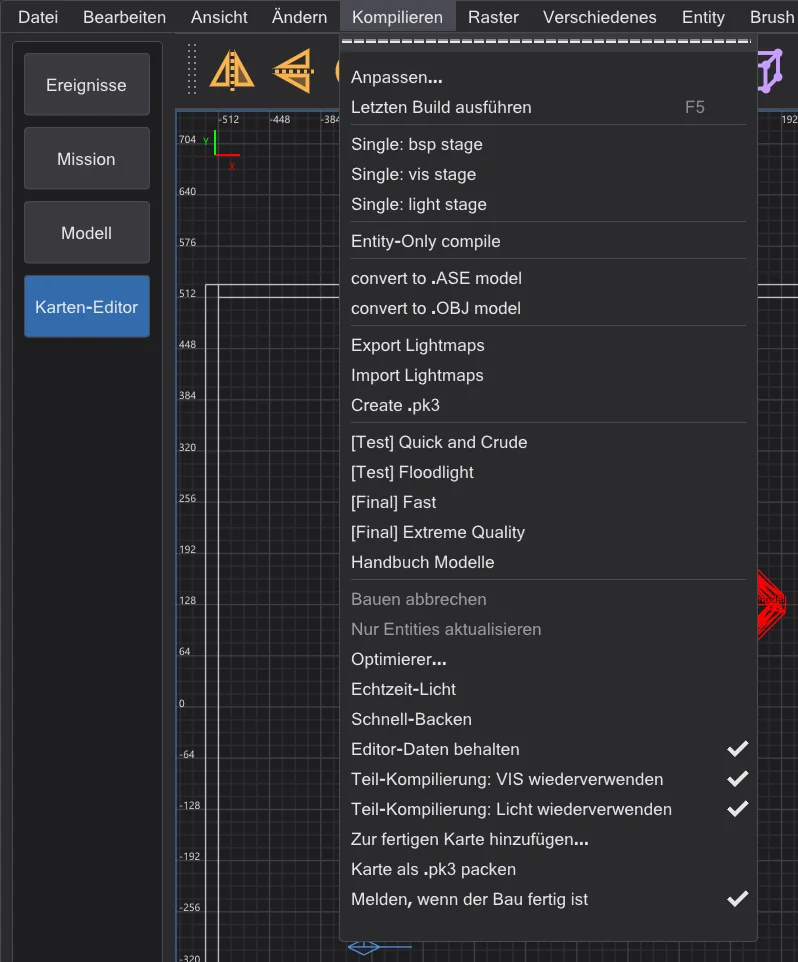
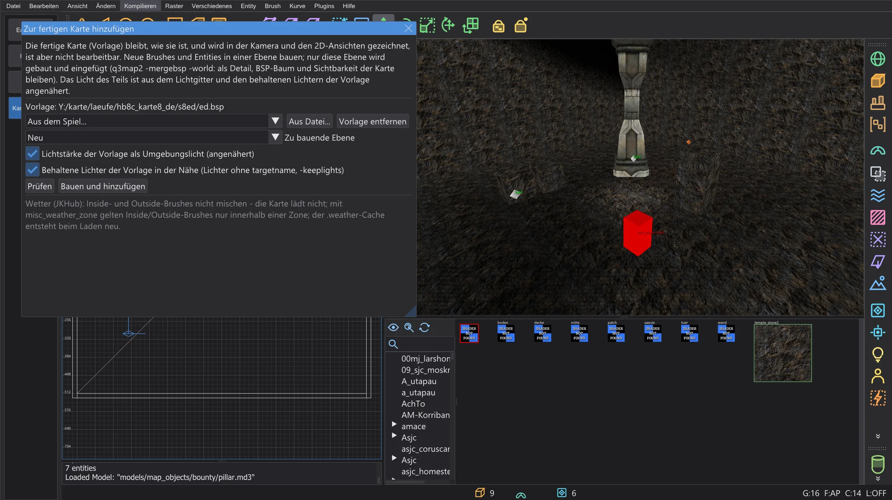
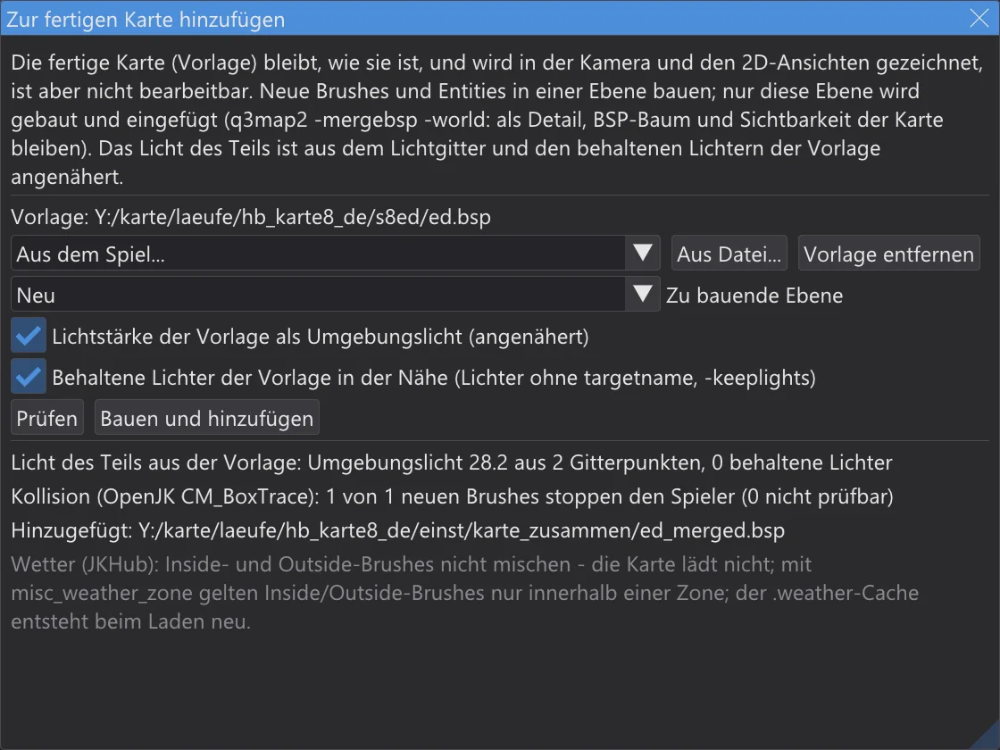

Karten-Editor: Bau-Fortschritt und Teil-Kompilierungen
Sehen, wie weit ein Bau ist und wie lange er noch dauert, nur neu bauen, was sich geändert hat - mit demselben Ergebnis wie ein voller Bau -, und einer fertigen Karte einen neuen Teil hinzufügen, ohne die Karte neu zu bauen.
Bau-Fortschritt#

- Während ein Bau aus dem Menü Kompilieren läuft, zeigt das Fenster Baufortschritt den Eintrag, den Schritt und seine Stufe (BSP, VIS, LIGHT), die Phase, in der q3map2 gerade ist, mit ihrem eigenen Fortschritt - die Punkte und Ziffern, die q3map2 ausgibt, oder den Bounce -, einen Balken über alle Schritte und die Zeit.
- Restzeit: im ersten Bau einer Karte mit einem Eintrag wird sie aus der laufenden Phase geschätzt und als „mindestens“ gezeigt. Ab dem zweiten Bau kommt sie aus den Zeiten des letzten Baus dieser Karte mit diesem Eintrag - die Schrittzeiten stehen in
karte_bauzeiten.jsonim Einstellungsordner. - Ist der Bau fertig, nennt die Konsole die Zeit jedes Schritts und vergleicht sie mit dem letzten Bau:
1 BSP: 0.4 s (letzter Bau 0.5 s, -20 %). - Bauen abbrechen im Fenster beendet q3map2, wie Kompilieren > Bauen abbrechen.
- Kompilieren > Melden, wenn der Bau fertig ist (vorgegeben an): ist JK Studio nicht das vordere Fenster, wenn ein Bau endet, blinkt sein Knopf in der Taskleiste - ohne Ton, ohne Dialog.
Teil-Kompilierungen#

Zwei Schalter im Menü Kompilieren lassen jeden Bau wiederverwenden, was sich seit dem letzten nicht geändert hat. Das Ergebnis ist Byte für Byte die .bsp eines vollen Baus - der ctest q3map2_teilbau baut Karten auf beide Arten und vergleicht die Dateien.
- Teil-Kompilierung: VIS wiederverwenden:
-visläuft mit-bhedvisreuse. bhed_q3map2 behält die Sichtbarkeit in<Karte>.bhedviszusammen mit der Portaldatei und den Schaltern. Sind die Portale (.prt), die Schalter und der Fernebenen-Schlüssel (_farplanedist) gleich, kopiert es die Sichtbarkeit, statt sie zu berechnen - die Konsole sagt visibility reused. Portale ändern sich nur mit strukturellen Brushes; Entities, Detail-Brushes, Patches und Texturen ändern sie nicht. - Teil-Kompilierung: Licht wiederverwenden:
-lightläuft mit-bhedlightcache. bhed_q3map2 behält jede Lightmap und das Lichtgitter in<Karte>.bhedlightmit einem Fingerabdruck von allem, was hineingeht - die Geometrie, die Lichter, die sie erreichen, die Schalter. Der nächste Lauf berechnet nur die Lightmaps, deren Fingerabdruck sich geändert hat: verschiebst du ein Licht, werden nur die Lightmaps neu beleuchtet, die es erreicht. Die Konsole sagt, wie viele aus dem Cache kamen:light cache: 9 of 14 lightmaps …. - Nur die Nachbearbeitung geändert -
-gamma,-exposure,-compensate,-saturation,-contrast,-gridscale,-gridambientscaleoder die worldspawn-Schlüssel_minlight,_minvertexlight,_mingridlight: jede Lightmap und das Gitter kommen aus dem Cache, nur die Nachbearbeitung läuft neu, ohne einen einzigen Strahl.
-bounce wird der Licht-Cache nicht benutzt: Bounce-Licht verbindet jede Lightmap mit jeder anderen. Mit mehreren Threads kann -vis selbst von Lauf zu Lauf leicht abweichen (siehe Karten-Editor: Tempo und Echtzeit-Licht); die wiederverwendete Sichtbarkeit ist die des letzten Laufs - für einen Vergleich mit einem vollen Bau nimm -vis -threads 1. Die Cache-Dateien liegen neben der Karte; lösche sie, um einen vollen Bau zu erzwingen. In die .pk3 gehören sie nicht.Zu einer fertigen Karte hinzufügen#

- 1
Öffne die Quellkarte, in der du den Teil baust - oder eine neue Karte - und wähle Kompilieren > Zur fertigen Karte hinzufügen. Als Vorlage nimm eine Karte des Spiels (Aus dem Spiel) oder irgendeine .bsp (Aus Datei). Sie wird in der Kamera und den 2D-Ansichten gezeichnet und lässt sich weder wählen noch ändern.
- 2
Baue den Teil - Brushes, Patches, Entities - in einer eigenen Ebene und wähle sie unter Zu bauende Ebene (vorgewählt ist die aktuelle Ebene).
- 3
Prüfen baut die Ebene und führt die Prüfungen unten aus, ohne etwas hinzuzufügen. Bauen und hinzufügen baut die Ebene (
-meta,-light -fast -samples 2) und fügt sie mitq3map2 -mergebsp -world -fixnamesein: als Detail in die Welt der Vorlage, deren BSP-Baum, Sichtbarkeit und Lightmaps bleiben. Das Ergebnis ist<Vorlage>_merged.bspim Ordnerkarte_zusammenim Einstellungsordner; die Vorlage selbst bleibt unverändert.

Was geprüft wird
- Wetter-Brushes:
system/insideundsystem/outsidedürfen nicht gemischt sein - nach dem Zusammenführen lädt eine Karte mit beiden nicht. Wäre es so, wird nichts hinzugefügt. - Wetterzonen: hat die Vorlage oder der Teil
misc_weather_zone-Entities, gelten Inside- und Outside-Brushes nur innerhalb einer Zone; Wetter-Brushes des Teils außerhalb jeder Zone bekommen eine Warnung, denn sie wirken nicht. - Namen: ein
targetodertargetnamedes Teils, den die Vorlage auch benutzt, benennt-fixnamesum - Verbindungen zwischen Vorlage und Teil gehen verloren. Der Dialog nennt diese Namen. - Grenzen: die zusammengeführte .bsp wird gezählt wie im Optimierer; eine Grenze über dem Höchstwert ist ein Fehler.
- Kollision: die zusammengeführte .bsp wird in das Kollisionsmodell des Spiels geladen (OpenJK
CM_BoxTrace, portiert); jeder neue feste Brush muss den Spielerkasten stoppen, wenn er von außen hineinläuft.
-keeplights). Das Lichtgitter der Vorlage wird nicht erneuert - Modelle und Spieler nahe am Teil werden beleuchtet wie vorher. Für die fertige Karte alles ganz bauen..weather beim Laden der Karte neu, eine alte muss man nicht löschen.